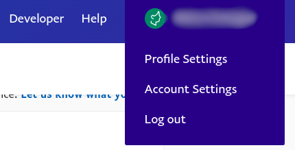

PayPal¶
Paypal es un proveedor de pago en líne estadounidense disponible en todo el mundo y es uno de los pocos que no cobran un cargo por suscripción.
Nota
Aunque PayPal está disponible en más de 200 países y regiones, solo unas cuantas divisas son compatibles.
Configuración en PayPal¶
Para acceder a los ajustes de su cuenta de PayPal, inicie sesión en PayPal, abra los Ajustes de la cuenta y abra el menú Pagos en el sitio web.
Importante
Tenga en cuenta que para que PayPal funcione en Odoo, deben estar activadas las opciones Retorno automático, PDT y IPN.
Retorno automático¶
La función de Retorno automático redirige automáticamente a los clientes a Odoo una vez que se procesó el pago.
Desde Pagos en el sitio web, vaya a y seleccione Activado. Introduzca la dirección de su base de datos de Odoo (por ejemplo, https://yourcompany.odoo.com) en el campo URL de retorno y luego haga clic en Guardar.
Nota
Cualquier URL funciona. Odoo solo necesita que la opción esté activada pues usa otra URL.
Transferencia de datos de pago (PDT)¶
La PDT le permite recibir las confirmaciones de los pagos, muestra el estado del pago a sus clientes y verifica la autenticidad de los mismos. Desde , baje hasta encontrar Transferencia de datos de pago y seleccione Activar.
Truco
PayPal le muestra su Token de identificación PDT tan pronto como estén activadas las opciones Retorno automático y Transferencia de datos de pago (PDT). Si necesita el Token de identificación PDT, desactive y reactive la Transferencia de datos de pago para mostrar el token de nuevo.
Notificación de pago instantáneo (IPN)¶
La IPN es similar a la PDT, pero activa más notificaciones, como la notificación de devolución del cargo. Para activar las IPN, vaya a y haga clic en Elegir ajustes de IPN. Introduzca una URL de notificación, seleccione Recibir mensajes de IPN (Activado) y luego en Guardar.
Cuenta opcional PayPal¶
Le recomendamos no pedirle a sus clientes que inicien sesión con su cuenta de Paypal en el momento del pago. Es mejor y más accesible que paguen con una tarjeta de crédito o débito. Para evitar que inicien sesión vaya a y seleccionarlo como Activado para la Cuenta opcional PayPal.
Formato de mensajes de pago¶
Si uso caracteres acentuados (o algo más que caracteres latinos básicos) para el nombre de sus clientes o direcciones, entonces debe configurar el formato de codificación de la solicitud de pago que envia Odoo a PayPal. Si no lo hace, algunas transacciones fallarán sin notificarle.
Para hacerlo, vaya a su cuenta de producción. Luego, haga clic en Más Opciones y establezca los dos formatos de codificación como UTF-8.
Truco
Para pagos encriptados en sitio web y errores EWP_SETTINGS, revise la documentación de Paypal.
Configure su Cuenta de Paypal Sandbox, luego entre a este enlace para configurar el formato de codificación en un entorno de prueba.
Ajustes en Odoo¶
Ver también
Credenciales¶
Odoo necesita sus Credenciales API para conectarse con su cuenta de PayPal. Para hacerlo, vaya a y Active PayPal. Luego, introduzca las credenciales de su cuenta de PayPal en la pestaña de Credenciales:
Correo electrónico: la dirección de correo electrónico para iniciar sesión en Paypal;
Token de identidad: la clave que se usa para verificar la autenticidad de las transacciones;
Usar IPN: actívelo para que PayPal funcione adecuadamente en Odoo.
Truco
Guarde el Token de identidad PDT para usarlo después.
Para establecer el Token de identificación PDT, cambie a modo desarrollador y obtenga el token siguiendo los pasos de configuración en Transferencia de datos de pago (PDT).
Nota
Odoo no requiere el ID de comerciante de PayPal.
Importante
Si está usando PayPal en modo prueba, usando una Cuenta sandbox PayPal, cambie el Estado a Entorno de prueba. Le recomendamos hacerlo en una base de datos de prueba de Odoo en lugar de su base de datos principal.
Tarifas adicionales¶
Puede cobrar cuotas adicionales a los clientes que elijan pagar con PayPal para cubrir los cargos por servicio que le cobra PayPal a usted.
Nota
Puede consultar las Tarifas de PayPal para establecer las suyas.
Los comerciantes de la UE no tienen permitido cobrar cuotas adicionales por pagar con tarjetas de crédito.
Entorno de prueba¶
Configuración¶
Gracias a las cuentas sandbox de PayPal, puede probar el flujo de pago completo en Odoo.
Inicie sesión en el Sitio de desarrolladro de PayPal usando sus credenciales de PayPal, lo que crea dos cuentas sandbox:
Una cuenta de negocios (para usar como comerciante, por ejemplo pp.merch01-facilitator@example.com);
Una cuenta personal predeterminada (para usarla como comprador, por ejemplo, pp.merch01-buyer@example.com).
Inicie sesión en sandbox de PayPal usando la cuenta de comerciante y siga las mismas instrucciones de configuración. Introduzca sus credenciales sanbox en Odoo ( en la pestaña de Credenciales, y asegúrese de que el estado esté en Ambiente de prueba.
Ejecute una transacción de prueba desde Odoo con la cuenta sandbox personal.
Ver también